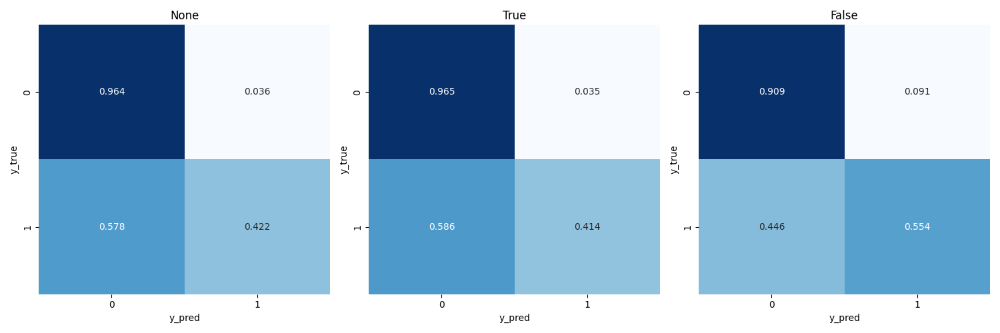
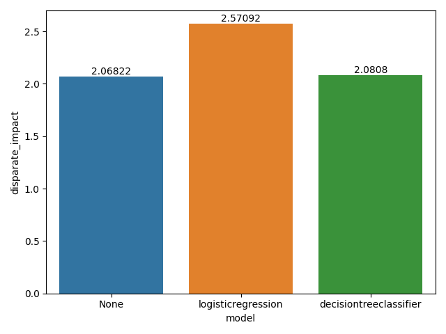
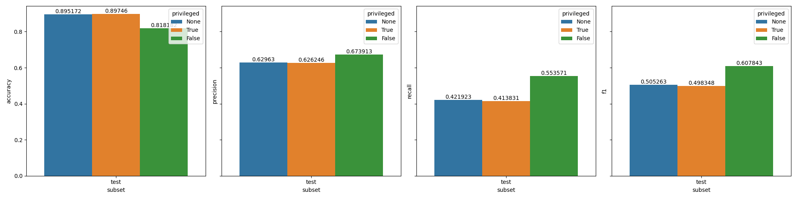
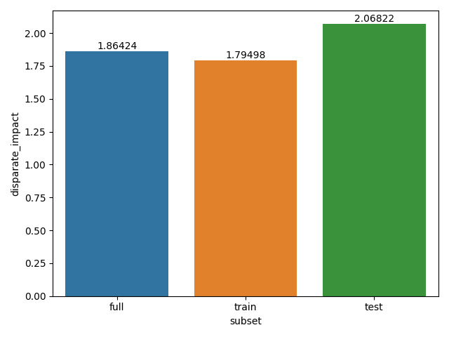
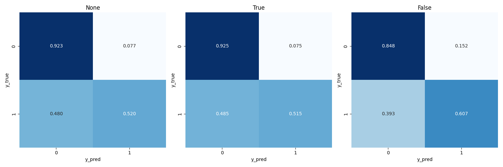

Analysis
Table of Contents
- 1. Summary of results
- 2. DONE adult-sex-lr
- 3. DONE adult-sex-dt
- 4. DONE adult-race-lr
- 5. DONE adult-race-dt
- 6. DONE compas-sex-lr
- 7. DONE compas-sex-dt
- 8. DONE compas-race-lr
- 9. DONE compas-race-dt
- 10. DONE bank-age-lr
- 11. DONE bank-age-dt
- 12. TODO german-sex-lr
- 13. TODO german-sex-dt
- 14. TODO german-age-lr
- 15. TODO german-age-dt
- 16. TODO gpa-race-lr
- 17. TODO gpa-race-dt
List of Tables
In this document we present the analysis of the results collected in this study.
We consider each protected attribute for each dataset as a separate analysis. For each analysis, we wish to answer the following questions:
- Is the model making unfair predictions?
- If so, do the model-centric fairness metrics indicate this unfair behaviour?
- If so, do the data-centric fairness metrics explain this unfair behaviour?
1. Summary of results
Following table presents a concise summary of the results obtained in this study.
| dataset | protected attribute | model | Q1 | Q2 | Q3 |
|---|---|---|---|---|---|
| adult | sex | lr | Y | Y | Y |
| adult | sex | dt | Y | Y | Y |
| adult | race | lr | Y | Y | Y |
| adult | race | dt | Y | Y | N |
| compas | sex | lr | Y | Y | Y |
| compas | sex | dt | Y | Y | Y |
| compas | race | lr | Y | Y | Y |
| compas | race | dt | Y | Y | Y |
| bank | age | lr | Y | Y | Y |
| bank | age | dt | Y | Y | Y |
| german | sex | lr | |||
| german | sex | dt | |||
| german | age | lr | |||
| german | age | dt | |||
| gpa | race | lr | |||
| gpa | race | dt |
2. DONE adult-sex-lr
2.1. Is the model unfair?

Figure 1: CM for logisticregression
As seen from Figure 1, the FNs for the unprivileged group is higher than the FNs for the privileged group. This indicates that the model is unfair towards the unprivileged group. Given an example from the unprivileged group, the model is more likely to incorrectly classify it as a negative example.
2.2. Do the model-centric metrics indicate unfairness?

Figure 2: Disparate Impact for models

Figure 3: Precision-recall for logisticregression
From Figure 2, the disparate impact for the logisticregression model is \(<1\) which indicates that the unprivileged group is at a disadvantage.
From Figure 3, the recall for the unprivileged group is lower than that of the privileged group. This indicates that when identifying positive examples, the model performs worse for the unprivileged group.
2.3. Do the data-centric metrics explain unfairness?

Figure 4: Disparate Impact for data
From Figure 4, the disparate impact across all subsets of the data is \(<1\) which indicates that the unprivileged group is at a disadvantage.

Figure 5: Base rate
From Figure 12:
\begin{equation} \label{orge7a9199} \text{base rate for unprivileged group} = P(Y=1 | D=\text{unprivileged}) = 0.120 \\ \implies P(Y=0 | D=\text{unprivileged}) = 1 - P(Y=1 | D=\text{unprivileged}) = 0.88 \end{equation}Similarly,
\begin{equation} \label{org7627129} \text{base rate for privileged group} = P(Y=1 | D=\text{privileged}) = 0.310 \\ \implies P(Y=0 | D=\text{privileged}) = 1 - P(Y=1 | D=\text{privileged}) = 0.69 \end{equation}Consider that we pick a random example from the dataset each from the privileged & unprivileged group. From Equations \eqref{orge7a9199} & \eqref{org7627129}, it is more likely that the example from the unprivileged group is negative compared to the privileged group.
Thus for the unprivileged group, the model is more biased towards the negative class compared to the privileged group, which examples why the recall for the unprivileged group is lower than that of the privileged group.
3. DONE adult-sex-dt
3.1. Is the model unfair?

3.2. Do the model-centric metrics indicate unfairness?

Figure 7: Precision-recall for decisiontreeclassifier
From Figure 2, the disparate impact for the decisiontreeclassifier model is \(<1\) which indicates that the unprivileged group is at a disadvantage.
From Figure 7, both the precision & recall for the unprivileged group is lower than that of the privileged group. This indicates that when identifying positive examples, the model performs worse for the unprivileged group. This is corroborated by Figure 6 where the model does not identify the TPs for the unprivileged group as well as the privileged group. The model also has higher FNs for the unprivileged group vs. privileged group.
4. DONE adult-race-lr
4.1. Is the model unfair?

4.2. Do the model-centric metrics indicate unfairness?

Figure 9: Disparate Impact for models
From Figure 9, the disparate impact is \(<1\) indicating the unprivileged group is at a disadvantage.

Figure 10: Precision-recall for logisticregression
From figure 10, the precision and recall for the unprivileged group is lower than the privileged group. This is explainable using the same logic seen in Section 2.


5. DONE adult-race-dt
5.1. Is the model unfair?

Figure 13: CM for decisiontreeclassifier
The model is biased to the negative class however the bias is similar for both privileged & unprivileged groups.
5.2. Do the model-centric metrics indicate unfairness?
From Figure 9, the disparate impact is \(<1\) but higher than the logisticregression model. This indicates that the decisiontreeclassifier is fairer compared to the logisticregression. This is corroborated by the confusion matrix as seen in Figure 13.

Figure 14: Precision-recall for decisiontreeclassifier
The recall for the privileged & unprivileged group are similar indicating the model is not biased towards a particular group.
[ ]why is the precision of the privileged group higher than the unprivileged group? the TPR & FPR are very similar for the groups so precision should be similar as well?
5.3. Do the data-centric metrics explain unfairness?
In this case, the data metrics indicate that the unprivileged group are at an advantage. However the decisiontreeclassifier does not show this bias.
6. DONE compas-sex-lr
6.1. Is the model unfair?

Figure 15: CM for logisticregression
From Figure 15, the model is biased to the positive class as the FPR is high. The FPR for the privileged group is higher than the unprivileged group. This means that the privileged group is at an advantage as the model is more likely to classify an example from the privileged group as positive.
6.2. Do the model-centric metrics indicate unfairness?

Figure 16: Disparate Impact for models

Figure 17: Precision-recall for logisticregression
From Figure 16, the disparate impact for the logisticregression model is \(<1\) which indicates that the unprivileged group is at a disadvantage.
From Figure 17, the precision & recall for the unprivileged group is lower than that of the privileged group. This indicates that when identifying positive examples, the model performs worse for the unprivileged group.
6.3. Do the data-centric metrics explain unfairness?

Figure 18: Disparate Impact for data
From Figure 18, the disparate impact across all subsets of the data is \(<1\) which indicates that the unprivileged group is at a disadvantage.
[ ]small catch here, the acceptable range for disparate impact is \([0.8, 1.1]\).

Figure 19: Base rate
Similar explaination for precision-recall as Section 2.
7. DONE compas-sex-dt
7.1. Is the model unfair?

Figure 20: CM for decisiontreeclassifier
From Figure 20, the model is biased to the positive class as the FPR is high. The FPR for the privileged group is higher than the unprivileged group albeit this bias is lesser compared to the logisticregression model seen in Section 6.
While the model is clearly biased to the positive class for privileged group, it seems to struggle identifying both the positive & negative classes in the unprivileged group (the FPR & FNR are similar).
7.2. Do the model-centric metrics indicate unfairness?

Figure 21: Precision-recall for decisiontreeclassifier
From Figure 16, the disparate impact for the decisiontreeclassifier model is \(<1\) but higher than logisticregression. This indicates that the unprivileged group is at a disadvantage but the decisiontreeclassifier is fairer than logisticregression.
From Figure 21, the precision & recall for the unprivileged group is lower than that of the privileged group. This indicates that when identifying positive examples, the model performs worse for the unprivileged group.
7.3. Do the data-centric metrics explain unfairness?
Similar explaination as Section 6.
8. DONE compas-race-lr
8.1. Is the model unfair?

Figure 22: CM for logisticregression
Similar bias as seen in Section 6.
8.2. Do the model-centric metrics indicate unfairness?

Figure 23: Disparate Impact for models

Figure 24: Precision-recall for logisticregression
From Figure 23, the disparate impact for the model is \(<1\) which indicates that the unprivileged group is at a disadvantage.
From Figure 24, the precision & recall for the unprivileged group is lower than the privileged group. This indicates that the model cannot identify the positive class for the unprivileged group as well as the privileged group.
8.3. Do the data-centric metrics explain unfairness?

Figure 25: Disparate Impact for data
Although the disparate impact across the subsets is \(<1\), its within the acceptable range of \([0.8, 1.1]\).

Figure 26: Base rate
Similar explaination for precision-recall as Section 2.
9. DONE compas-race-dt
9.1. Is the model unfair?

9.2. Do the model-centric metrics indicate unfairness?

Figure 28: Precision-recall for decisiontreeclassifier
From Figure 23, the disparate impact for the decisiontreeclassifier model is \(<1\) but higher than logisticregression (and within the acceptable range). This indicates that the unprivileged group is at a disadvantage but the decisiontreeclassifier is fairer than logisticregression.
From Figure 28, the precision & recall for the unprivileged group is lower than that of the privileged group. This indicates that when identifying positive examples, the model performs worse for the unprivileged group.
9.3. Do the data-centric metrics explain unfairness?
Similar explaination as Section 8.
10. DONE bank-age-lr
10.1. Is the model unfair?

Figure 29: CM for logisticregression
From Figure 29, the model is biased to the negative class. The model is more biased to the negative class for the privileged group as the FNR for the privileged group is higher than the unprivileged group.
10.2. Do the model-centric metrics indicate unfairness?

Figure 30: Disparate Impact for models
From Figure 30 is \(>1\) indicating that the unprivileged group are at an advantage.

Figure 31: Precision-recall for logisticregression
From Figure 31, the precision & recall for the unprivileged group is higher than the privileged group indicating that the model is better at predicting the positive class for the unprivileged group vs. the privileged group.
10.3. Do the data-centric metrics explain unfairness?

Figure 32: Disparate Impact for data
From Figure 32, the disparate impact across the subsets is \(>1\) indicating that the unprivileged group are at an advantage.

Figure 33: Base rate
From 33, the base rate for the unprivileged group is higher than the privileged group.
If we pick an example from the data at random both for the privileged & unprivileged group, the unprivileged example is more likely to be positive vs. the privileged example.
11. DONE bank-age-dt
11.1. Is the model unfair?

Figure 34: CM for decisiontreeclassifier
Similar bias as seen in Section 10.
11.2. Do the model-centric metrics indicate unfairness?

Figure 35: Precision-recall for decisiontreeclassifier
From Figure 30, the disparate impact for the decisiontreeclassifier is \(>1\) indicating that the unprivileged group is at an advantage.
We also note that the disparate impact of the decisiontreeclassifier is lower than the logisticregression model. This indicates that yet again, the decisiontreeclassifier is fairer compared to the logisticregression.
From Figure 35, the precision & recall for the unprivileged group is higher than the privileged group. This indicates that the model is better at identifying the unprivileged prositive examples.
11.3. Do the data-centric metrics explain unfairness?
Similar explaination as Section 10.